A core responsibility of any operating system kernel is managing the hardware connected to the machine—hard drives and Blu-ray discs, keyboards and mice, 3D processors and wireless radios. To meet this responsibility, the kernel needs to communicate with the machine’s individual devices. Given that processors can be orders of magnitudes faster than the hardware they talk to, it is not ideal for the kernel to issue a request and wait for a response from the significantly slower hardware. Instead, because the hardware is comparatively slow to respond, the kernel must be free to go and handle other work, dealing with the hardware only after that hardware has actually completed its work.
How can the processor work with hardware without impacting the machine’s overall performance? One answer to this question is polling. Periodically, the kernel can check the status of the hardware in the system and respond accordingly. Polling incurs overhead, however, because it must occur repeatedly regardless of whether the hardware is active or ready. A better solution is to provide a mechanism for the hardware to signal to the kernel when attention is needed. This mechanism is called an interrupt. In this chapter, we discuss interrupts and how the kernel responds to them, with special functions called interrupt handlers.
Interrupts enable hardware to signal to the processor. For example, as you type, the keyboard controller (the hardware device that manages the keyboard) issues an electrical signal to the processor to alert the operating system to newly available key presses. These electrical signals are interrupts. The processor receives the interrupt and signals the operating system to enable the operating system to respond to the new data. Hardware devices generate interrupts asynchronously with respect to the processor clock—they can occur at any time. Consequently, the kernel can be interrupted at any time to process interrupts.
An interrupt is physically produced by electronic signals originating from hardware devices and directed into input pins on an interrupt controller, a simple chip that multiplexes multiple interrupt lines into a single line to the processor. Upon receiving an interrupt, the interrupt controller sends a signal to the processor. The processor detects this signal and interrupts its current execution to handle the interrupt. The processor can then notify the operating system that an interrupt has occurred, and the operating system can handle the interrupt appropriately.
Different devices can be associated with different interrupts by means of a unique value associated with each interrupt. This way, interrupts from the keyboard are distinct from interrupts from the hard drive. This enables the operating system to differentiate between interrupts and to know which hardware device caused which interrupt. In turn, the operating system can service each interrupt with its corresponding handler.
These interrupt values are often called interrupt request (IRQ) lines. Each IRQ line is assigned a numeric value—for example, on the classic PC, IRQ zero is the timer interrupt and IRQ one is the keyboard interrupt. Not all interrupt numbers, however, are so rigidly defined. Interrupts associated with devices on the PCI bus, for example, generally are dynamically assigned. Other non-PC architectures have similar dynamic assignments for interrupt values. The important notion is that a specific interrupt is associated with a specific device, and the kernel knows this. The hardware then issues interrupts to get the kernel’s attention: Hey, I have new key presses waiting! Read and process these bad boys!
Exceptions
In OS texts, exceptions are often discussed at the same time as interrupts. Unlike interrupts, exceptions occur synchronously with respect to the processor clock. Indeed, they are often called synchronous interrupts. Exceptions are produced by the processor while executing instructions either in response to a programming error (for example, divide by zero) or abnormal conditions that must be handled by the kernel (for example, a page fault). Because many processor architectures handle exceptions in a similar manner to interrupts, the kernel infrastructure for handling the two is similar. Much of the discussion of interrupts (asynchronous interrupts generated by hardware) in this chapter also pertains to exceptions (synchronous interrupts generated by the processor).
You are already familiar with one exception: In the previous chapter, you saw how system calls on the x86 architecture are implemented by the issuance of a software interrupt, which traps into the kernel and causes execution of a special system call handler. Interrupts work in a similar way, you will see, except hardware—not software—issues interrupts.
The function the kernel runs in response to a specific interrupt is called an interrupt handler or interrupt service routine (ISR). Each device that generates interrupts has an associated interrupt handler. For example, one function handles interrupts from the system timer, whereas another function handles interrupts generated by the keyboard. The interrupt handler for a device is part of the device’s driver—the kernel code that manages the device.
In Linux, interrupt handlers are normal C functions. They match a specific prototype, which enables the kernel to pass the handler information in a standard way, but otherwise they are ordinary functions. What differentiates interrupt handlers from other kernel functions is that the kernel invokes them in response to interrupts and that they run in a special context (discussed later in this chapter) called interrupt context. This special context is occasionally called atomic context because, as we shall see, code executing in this context is unable to block. In this book, we will use the term interrupt context.
Because an interrupt can occur at any time, an interrupt handler can, in turn, be executed at any time. It is imperative that the handler runs quickly, to resume execution of the interrupted code as soon as possible. Therefore, while it is important to the hardware that the operating system services the interrupt without delay, it is also important to the rest of the system that the interrupt handler executes in as short a period as possible.
At the very least, an interrupt handler’s job is to acknowledge the interrupt’s receipt to the hardware: Hey, hardware, I hear ya; now get back to work! Often, however, interrupt handlers have a large amount of work to perform. For example, consider the interrupt handler for a network device. On top of responding to the hardware, the interrupt handler needs to copy networking packets from the hardware into memory, process them, and push the packets down to the appropriate protocol stack or application. Obviously, this can be a lot of work, especially with today’s gigabit and 10-gigabit Ethernet cards.
These two goals—that an interrupt handler execute quickly and perform a large amount of work—clearly conflict with one another. Because of these competing goals, the processing of interrupts is split into two parts, or halves. The interrupt handler is the top half. The top half is run immediately upon receipt of the interrupt and performs only the work that is time-critical, such as acknowledging receipt of the interrupt or resetting the hardware. Work that can be performed later is deferred until the bottom half. The bottom half runs in the future, at a more convenient time, with all interrupts enabled. Linux provides various mechanisms for implementing bottom halves, and they are all discussed in Chapter 8, “Bottom Halves and Deferring Work.”
Let’s look at an example of the top-half/bottom-half dichotomy, using our old friend, the network card. When network cards receive packets from the network, they need to alert the kernel of their availability. They want and need to do this immediately, to optimize network throughput and latency and avoid timeouts. Thus, they immediately issue an interrupt: Hey, kernel, I have some fresh packets here! The kernel responds by executing the network card’s registered interrupt.
The interrupt runs, acknowledges the hardware, copies the new networking packets into main memory, and readies the network card for more packets. These jobs are the important, time-critical, and hardware-specific work. The kernel generally needs to quickly copy the networking packet into main memory because the network data buffer on the networking card is fixed and miniscule in size, particularly compared to main memory. Delays in copying the packets can result in a buffer overrun, with incoming packets overwhelming the networking card’s buffer and thus packets being dropped. After the networking data is safely in the main memory, the interrupt’s job is done, and it can return control of the system to whatever code was interrupted when the interrupt was generated. The rest of the processing and handling of the packets occurs later, in the bottom half. In this chapter, we look at the top half; in the next chapter, we study the bottom.
Interrupt handlers are the responsibility of the driver managing the hardware. Each device has one associated driver and, if that device uses interrupts (and most do), then that driver must register one interrupt handler.
Drivers can register an interrupt handler and enable a given interrupt line for handling with the function request_irq(), which is declared in <linux/interrupt.h>:
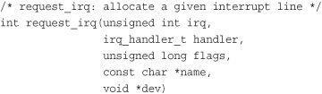
The first parameter, irq, specifies the interrupt number to allocate. For some devices, for example legacy PC devices such as the system timer or keyboard, this value is typically hard-coded. For most other devices, it is probed or otherwise determined programmatically and dynamically.
The second parameter, handler, is a function pointer to the actual interrupt handler that services this interrupt. This function is invoked whenever the operating system receives the interrupt.
typedef irqreturn_t (*irq_handler_t)(int, void *);
Note the specific prototype of the handler function: It takes two parameters and has a return value of irqreturn_t. This function is discussed later in this chapter.
The third parameter, flags, can be either zero or a bit mask of one or more of the flags defined in <linux/interrupt.h>. Among these flags, the most important are
•
IRQF_DISABLED—When set, this flag instructs the kernel to disable all interrupts when executing this interrupt handler. When unset, interrupt handlers run with all interrupts except their own enabled. Most interrupt handlers do not set this flag, as disabling all interrupts is bad form. Its use is reserved for performance-sensitive interrupts that execute quickly. This flag is the current manifestation of theSA_INTERRUPTflag, which in the past distinguished between “fast” and “slow” interrupts.
•
IRQF_SAMPLE_RANDOM—This flag specifies that interrupts generated by this device should contribute to the kernel entropy pool. The kernel entropy pool provides truly random numbers derived from various random events. If this flag is specified, the timing of interrupts from this device are fed to the pool as entropy. Do not set this if your device issues interrupts at a predictable rate (for example, the system timer) or can be influenced by external attackers (for example, a networking device). On the other hand, most other hardware generates interrupts at nondeterministic times and is, therefore, a good source of entropy.
•
IRQF_TIMER—This flag specifies that this handler processes interrupts for the system timer.
•
IRQF_SHARED—This flag specifies that the interrupt line can be shared among multiple interrupt handlers. Each handler registered on a given line must specify this flag; otherwise, only one handler can exist per line. More information on shared handlers is provided in a following section.
The fourth parameter, name, is an ASCII text representation of the device associated with the interrupt. For example, this value for the keyboard interrupt on a PC is keyboard. These text names are used by /proc/irq and /proc/interrupts for communication with the user, which is discussed shortly.
The fifth parameter, dev, is used for shared interrupt lines. When an interrupt handler is freed (discussed later), dev provides a unique cookie to enable the removal of only the desired interrupt handler from the interrupt line. Without this parameter, it would be impossible for the kernel to know which handler to remove on a given interrupt line. You can pass NULL here if the line is not shared, but you must pass a unique cookie if your interrupt line is shared. (And unless your device is old and crusty and lives on the ISA bus, there is a good chance it must support sharing.) This pointer is also passed into the interrupt handler on each invocation. A common practice is to pass the driver’s device structure: This pointer is unique and might be useful to have within the handlers.
On success, request_irq() returns zero. A nonzero value indicates an error, in which case the specified interrupt handler was not registered. A common error is -EBUSY, which denotes that the given interrupt line is already in use (and either the current user or you did not specify IRQF_SHARED).
Note that request_irq() can sleep and therefore cannot be called from interrupt context or other situations where code cannot block. It is a common mistake to call request_irq() when it is unsafe to sleep. This is partly because of why
request_irq() can block: It is indeed unclear. On registration, an entry corresponding to the interrupt is created in /proc/irq. The function proc_mkdir() creates new procfs entries. This function calls proc_create() to set up the new procfs entries, which in turn calls kmalloc() to allocate memory. As you will see in Chapter 12, “Memory Management,” kmalloc() can sleep. So there you go!
In a driver, requesting an interrupt line and installing a handler is done via request_irq():
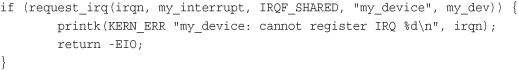
In this example, irqn is the requested interrupt line; my_interrupt is the handler; we specify via flags that the line can be shared; the device is named my_device; and we passed my_dev for dev. On failure, the code prints an error and returns. If the call returns zero, the handler has been successfully installed. From that point forward, the handler is invoked in response to an interrupt. It is important to initialize hardware and register an interrupt handler in the proper order to prevent the interrupt handler from running before the device is fully initialized.
When your driver unloads, you need to unregister your interrupt handler and potentially disable the interrupt line. To do this, call
void free_irq(unsigned int irq, void *dev)
If the specified interrupt line is not shared, this function removes the handler and disables the line. If the interrupt line is shared, the handler identified via dev is removed, but the interrupt line is disabled only when the last handler is removed. Now you can see why a unique dev is important. With shared interrupt lines, a unique cookie is required to differentiate between the multiple handlers that can exist on a single line and enable free_irq() to remove only the correct handler. In either case (shared or unshared), if dev is non-NULL, it must match the desired handler. A call to free_irq() must be made from process context.
Table 7.1 reviews the functions for registering and deregistering an interrupt handler.
Table 7.1. Interrupt Registration Methods
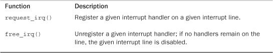
The following is a declaration of an interrupt handler:
static irqreturn_t intr_handler(int irq, void *dev)
Note that this declaration matches the prototype of the handler argument given to request_irq(). The first parameter, irq, is the numeric value of the interrupt line the handler is servicing. This value is passed into the handler, but it is not used very often, except in printing log messages. Before version 2.0 of the Linux kernel, there was not a dev parameter and thus irq was used to differentiate between multiple devices using the same driver and therefore the same interrupt handler. As an example of this, consider a computer with multiple hard drive controllers of the same type.
The second parameter, dev, is a generic pointer to the same dev that was given to request_irq() when the interrupt handler was registered. If this value is unique (which is required to support sharing), it can act as a cookie to differentiate between multiple devices potentially using the same interrupt handler. dev might also point to a structure of use to the interrupt handler. Because the device structure is both unique to each device and potentially useful to have within the handler, it is typically passed for dev.
The return value of an interrupt handler is the special type irqreturn_t. An interrupt handler can return two special values, IRQ_NONE or IRQ_HANDLED. The former is returned when the interrupt handler detects an interrupt for which its device was not the originator. The latter is returned if the interrupt handler was correctly invoked, and its device did indeed cause the interrupt. Alternatively, IRQ_RETVAL(val) may be used. If val is nonzero, this macro returns IRQ_HANDLED. Otherwise, the macro returns IRQ_NONE. These special values are used to let the kernel know whether devices are issuing spurious (that is, unrequested) interrupts. If all the interrupt handlers on a given interrupt line return IRQ_NONE, then the kernel can detect the problem. Note the curious return type, irqreturn_t, which is simply an int. This value provides backward compatibility with earlier kernels, which did not have this feature; before 2.6, interrupt handlers returned void. Drivers may simply typedef irqreturn_t to void and define the different return values to no-ops and then work in 2.4 without further modification. The interrupt handler is normally marked static because it is never called directly from another file.
The role of the interrupt handler depends entirely on the device and its reasons for issuing the interrupt. At a minimum, most interrupt handlers need to provide acknowledgment to the device that they received the interrupt. Devices that are more complex need to additionally send and receive data and perform extended work in the interrupt handler. As mentioned, the extended work is pushed as much as possible into the bottom half handler, which is discussed in the next chapter.
Reentrancy and Interrupt Handlers
Interrupt handlers in Linux need not be reentrant. When a given interrupt handler is executing, the corresponding interrupt line is masked out on all processors, preventing another interrupt on the same line from being received. Normally all other interrupts are enabled, so other interrupts are serviced, but the current line is always disabled. Consequently, the same interrupt handler is never invoked concurrently to service a nested interrupt. This greatly simplifies writing your interrupt handler.
A shared handler is registered and executed much like a nonshared handler. Following are three main differences:
• The
IRQF_SHAREDflag must be set in theflagsargument torequest_irq().
• The
devargument must be unique to each registered handler. A pointer to any per-device structure is sufficient; a common choice is thedevicestructure as it is both unique and potentially useful to the handler. You cannot passNULLfor a shared handler!
• The interrupt handler must be capable of distinguishing whether its device actually generated an interrupt. This requires both hardware support and associated logic in the interrupt handler. If the hardware did not offer this capability, there would be no way for the interrupt handler to know whether its associated device or some other device sharing the line caused the interrupt.
All drivers sharing the interrupt line must meet the previous requirements. If any one device does not share fairly, none can share the line. When request_irq() is called with IRQF_SHARED specified, the call succeeds only if the interrupt line is currently not registered, or if all registered handlers on the line also specified IRQF_SHARED. Shared handlers, however, can mix usage of IRQF_DISABLED.
When the kernel receives an interrupt, it invokes sequentially each registered handler on the line. Therefore, it is important that the handler be capable of distinguishing whether it generated a given interrupt. The handler must quickly exit if its associated device did not generate the interrupt. This requires the hardware device to have a status register (or similar mechanism) that the handler can check. Most hardware does indeed have such a feature.
Let’s look at a real interrupt handler, from the real-time clock (RTC) driver, found in drivers/char/rtc.c. An RTC is found in many machines, including PCs. It is a device, separate from the system timer, which sets the system clock, provides an alarm, or supplies a periodic timer. On most architectures, the system clock is set by writing the desired time into a specific register or I/O range. Any alarm or periodic timer functionality is normally implemented via interrupt. The interrupt is equivalent to a real-world clock alarm: The receipt of the interrupt is analogous to a buzzing alarm.
When the RTC driver loads, the function rtc_init() is invoked to initialize the driver. One of its duties is to register the interrupt handler:
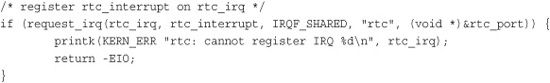
In this example, the interrupt line is stored in rtc_irq. This variable is set to the RTC interrupt for a given architecture. On a PC, the RTC is located at IRQ 8. The second parameter is the interrupt handler, rtc_interrupt, which is willing to share the interrupt line with other handlers, thanks to the IRQF_SHARED flag. From the fourth parameter, you can see that the driver name is rtc. Because this device shares the interrupt line, it passes a unique per-device value for dev.
Finally, the handler itself:
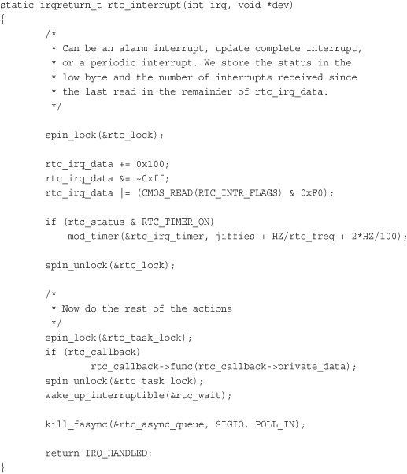
This function is invoked whenever the machine receives the RTC interrupt. First, note the spin lock calls: The first set ensures that rtc_irq_data is not accessed concurrently by another processor on an SMP machine, and the second set protects rtc_callback from the same. Locks are discussed in Chapter 10, “Kernel Synchronization Methods.”
The rtc_irq_data variable is an unsigned long that stores information about the RTC and is updated on each interrupt to reflect the status of the interrupt.
Next, if an RTC periodic timer is set, it is updated via mod_timer(). Timers are discussed in Chapter 11, “Timers and Time Management.”
The final bunch of code, under the comment “now do the rest of the actions,” executes a possible preset callback function. The RTC driver enables a callback function to be registered and executed on each RTC interrupt.
Finally, this function returns IRQ_HANDLED to signify that it properly handled this device. Because the interrupt handler does not support sharing, and there is no mechanism for the RTC to detect a spurious interrupt, this handler always returns IRQ_HANDLED.
When executing an interrupt handler, the kernel is in interrupt context. Recall that process context is the mode of operation the kernel is in while it is executing on behalf of a process—for example, executing a system call or running a kernel thread. In process context, the current macro points to the associated task. Furthermore, because a process is coupled to the kernel in process context, process context can sleep or otherwise invoke the scheduler.
Interrupt context, on the other hand, is not associated with a process. The current macro is not relevant (although it points to the interrupted process). Without a backing process, interrupt context cannot sleep—how would it ever reschedule? Therefore, you cannot call certain functions from interrupt context. If a function sleeps, you cannot use it from your interrupt handler—this limits the functions that one can call from an interrupt handler.
Interrupt context is time-critical because the interrupt handler interrupts other code. Code should be quick and simple. Busy looping is possible, but discouraged. This is an important point; always keep in mind that your interrupt handler has interrupted other code (possibly even another interrupt handler on a different line!). Because of this asynchronous nature, it is imperative that all interrupt handlers be as quick and as simple as possible. As much as possible, work should be pushed out from the interrupt handler and performed in a bottom half, which runs at a more convenient time.
The setup of an interrupt handler’s stacks is a configuration option. Historically, interrupt handlers did not receive their own stacks. Instead, they would share the stack of the process that they interrupted.1 The kernel stack is two pages in size; typically, that is 8KB on 32-bit architectures and 16KB on 64-bit architectures. Because in this setup interrupt handlers share the stack, they must be exceptionally frugal with what data they allocate there. Of course, the kernel stack is limited to begin with, so all kernel code should be cautious.
1 A process is always running. When nothing else is schedulable, the idle task runs.
Early in the 2.6 kernel process, an option was added to reduce the stack size from two pages down to one, providing only a 4KB stack on 32-bit systems. This reduced memory pressure because every process on the system previously needed two pages of contiguous, nonswappable kernel memory. To cope with the reduced stack size, interrupt handlers were given their own stack, one stack per processor, one page in size. This stack is referred to as the interrupt stack. Although the total size of the interrupt stack is half that of the original shared stack, the average stack space available is greater because interrupt handlers get the full page of memory to themselves.
Your interrupt handler should not care what stack setup is in use or what the size of the kernel stack is. Always use an absolute minimum amount of stack space.
Perhaps not surprising, the implementation of the interrupt handling system in Linux is architecture-dependent. The implementation depends on the processor, the type of interrupt controller used, and the design of the architecture and machine.
Figure 7.1 is a diagram of the path an interrupt takes through hardware and the kernel.
Figure 7.1. The path that an interrupt takes from hardware and on through the kernel.
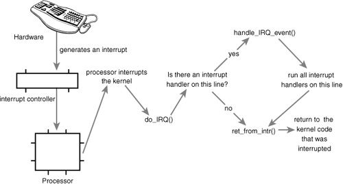
A device issues an interrupt by sending an electric signal over its bus to the interrupt controller. If the interrupt line is enabled (they can be masked out), the interrupt controller sends the interrupt to the processor. In most architectures, this is accomplished by an electrical signal sent over a special pin to the processor. Unless interrupts are disabled in the processor (which can also happen), the processor immediately stops what it is doing, disables the interrupt system, and jumps to a predefined location in memory and executes the code located there. This predefined point is set up by the kernel and is the entry point for interrupt handlers.
The interrupt’s journey in the kernel begins at this predefined entry point, just as system calls enter the kernel through a predefined exception handler. For each interrupt line, the processor jumps to a unique location in memory and executes the code located there. In this manner, the kernel knows the IRQ number of the incoming interrupt. The initial entry point simply saves this value and stores the current register values (which belong to the interrupted task) on the stack; then the kernel calls do_IRQ(). From here onward, most of the interrupt handling code is written in C; however, it is still architecture-dependent.
The do_IRQ() function is declared as
unsigned int do_IRQ(struct pt_regs regs)
Because the C calling convention places function arguments at the top of the stack, the pt_regs structure contains the initial register values that were previously saved in the assembly entry routine. Because the interrupt value was also saved, do_IRQ() can extract it. After the interrupt line is calculated, do_IRQ() acknowledges the receipt of the interrupt and disables interrupt delivery on the line. On normal PC machines, these operations are handled by mask_and_ack_8259A().
Next, do_IRQ() ensures that a valid handler is registered on the line and that it is enabled and not currently executing. If so, it calls handle_IRQ_event(), defined in kernel/irq/handler.c, to run the installed interrupt handlers for the line.
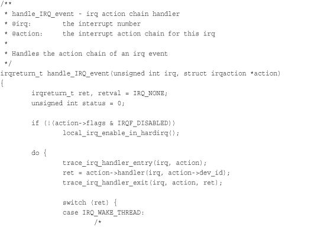
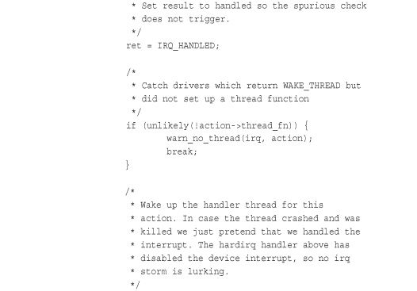
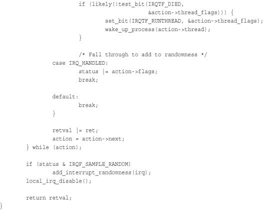
First, because the processor disabled interrupts, they are turned back on unless IRQF_DISABLED was specified during the handler’s registration. Recall that IRQF_DISABLED specifies that the handler must be run with interrupts disabled. Next, each potential handler is executed in a loop. If this line is not shared, the loop terminates after the first iteration. Otherwise, all handlers are executed. After that, add_interrupt_randomness() is called if IRQF_SAMPLE_RANDOM was specified during registration. This function uses the timing of the interrupt to generate entropy for the random number generator. Finally, interrupts are again disabled (do_IRQ() expects them still to be off) and the function returns. Back in do_IRQ(), the function cleans up and returns to the initial entry point, which then jumps to ret_from_intr().
The routine ret_from_intr() is, as with the initial entry code, written in assembly. This routine checks whether a reschedule is pending. (Recall from Chapter 4, “Process Scheduling,” that this implies that need_resched is set). If a reschedule is pending, and the kernel is returning to user-space (that is, the interrupt interrupted a user process), schedule() is called. If the kernel is returning to kernel-space (that is, the interrupt interrupted the kernel itself), schedule() is called only if the preempt_count is zero. Otherwise it is not safe to preempt the kernel. After schedule() returns, or if there is no work pending, the initial registers are restored and the kernel resumes whatever was interrupted.
On x86, the initial assembly routines are located in arch/x86/kernel/entry_64.S (entry_32.S for 32-bit x86) and the C methods are located in arch/x86/kernel/irq.c. Other supported architectures are similar.
/proc/interruptsProcfs is a virtual filesystem that exists only in kernel memory and is typically mounted at /proc. Reading or writing files in procfs invokes kernel functions that simulate reading or writing from a real file. A relevant example is the /proc/interrupts file, which is populated with statistics related to interrupts on the system. Here is sample output from a uniprocessor PC:
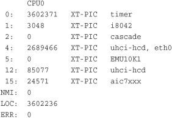
The first column is the interrupt line. On this system, interrupts numbered 0–2, 4, 5, 12, and 15 are present. Handlers are not installed on lines not displayed. The second column is a counter of the number of interrupts received. A column is present for each processor on the system, but this machine has only one processor. As you can see, the timer interrupt has received 3,602,371 interrupts,2 whereas the sound card (EMU10K1) has received none (which is an indication that it has not been used since the machine booted). The third column is the interrupt controller handling this interrupt. XT-PIC corresponds to the standard PC programmable interrupt controller. On systems with an I/O APIC, most interrupts would list IO-APIC-level or IO-APIC-edge as their interrupt controller. Finally, the last column is the device associated with this interrupt. This name is supplied by the devname parameter to request_irq(), as discussed previously. If the interrupt is shared, as is the case with interrupt number 4 in this example, all the devices registered on the interrupt line are listed.
2
As an exercise, after reading Chapter 11 can you tell how long the system has been up (in terms of HZ), knowing the number of timer interrupts that have occurred?
For the curious, procfs code is located primarily in fs/proc. The function that provides /proc/interrupts is, not surprisingly, architecture-dependent and named show_interrupts().
The Linux kernel implements a family of interfaces for manipulating the state of interrupts on a machine. These interfaces enable you to disable the interrupt system for the current processor or mask out an interrupt line for the entire machine. These routines are all architecture-dependent and can be found in <asm/system.h> and <asm/irq.h>. See Table 7.2, later in this chapter, for a complete listing of the interfaces.
Table 7.2. Interrupt Control Methods
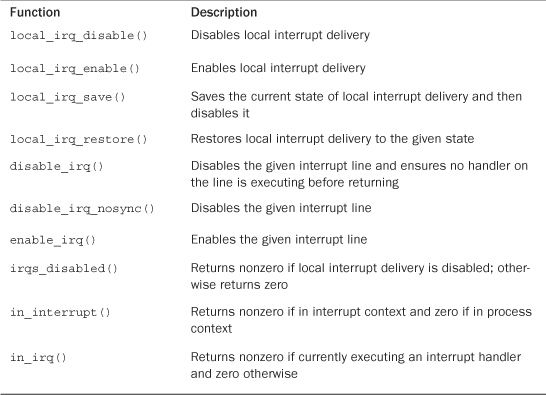
Reasons to control the interrupt system generally boil down to needing to provide synchronization. By disabling interrupts, you can guarantee that an interrupt handler will not preempt your current code. Moreover, disabling interrupts also disables kernel preemption. Neither disabling interrupt delivery nor disabling kernel preemption provides any protection from concurrent access from another processor, however. Because Linux supports multiple processors, kernel code more generally needs to obtain some sort of lock to prevent another processor from accessing shared data simultaneously. These locks are often obtained in conjunction with disabling local interrupts. The lock provides protection against concurrent access from another processor, whereas disabling interrupts provides protection against concurrent access from a possible interrupt handler. Chapters 9 and 10 discuss the various problems of synchronization and their solutions. Nevertheless, understanding the kernel interrupt control interfaces is important.
To disable interrupts locally for the current processor (and only the current processor) and then later reenable them, do the following:
local_irq_disable();
/* interrupts are disabled .. */
local_irq_enable();
These functions are usually implemented as a single assembly operation. (Of course, this depends on the architecture.) Indeed, on x86, local_irq_disable() is a simple cli and local_irq_enable() is a simple sti instruction. cli and sti are the assembly calls to clear and set the allow interrupts flag, respectively. In other words, they disable and enable interrupt delivery on the issuing processor.
The local_irq_disable() routine is dangerous if interrupts were already disabled prior to its invocation. The corresponding call to local_irq_enable() unconditionally enables interrupts, despite the fact that they were off to begin with. Instead, a mechanism is needed to restore interrupts to a previous state. This is a common concern because a given code path in the kernel can be reached both with and without interrupts enabled, depending on the call chain. For example, imagine the previous code snippet is part of a larger function. Imagine that this function is called by two other functions, one that disables interrupts and one that does not. Because it is becoming harder as the kernel grows in size and complexity to know all the code paths leading up to a function, it is much safer to save the state of the interrupt system before disabling it. Then, when you are ready to reenable interrupts, you simply restore them to their original state:
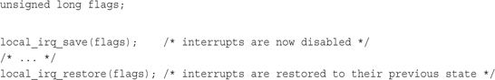
Note that these methods are implemented at least in part as macros, so the flags parameter (which must be defined as an unsigned long) is seemingly passed by value. This parameter contains architecture-specific data containing the state of the interrupt systems. Because at least one supported architecture incorporates stack information into the value (ahem, SPARC), flags
cannot be passed to another function (specifically, it must remain on the same stack frame). For this reason, the call to save and the call to restore interrupts must occur in the same function.
All the previous functions can be called from both interrupt and process context.
No More Global
cli()The kernel formerly provided a method to disable interrupts on all processors in the system. Furthermore, if another processor called this method, it would have to wait until interrupts were enabled before continuing. This function was named
cli()and the corresponding enable call was namedsti()—very x86-centric, despite existing for all architectures. These interfaces were deprecated during 2.5, and consequently all interrupt synchronization must now use a combination of local interrupt control and spin locks (discussed in Chapter 9, “An Introduction to Kernel Synchronization”). This means that code that previously only had to disable interrupts globally to ensure mutual-exclusive access to shared data now needs to do a bit more work.Previously, driver writers could assume a
cli()used in their interrupt handlers and anywhere else the shared data was accessed would provide mutual exclusion. Thecli()call would ensure that no other interrupt handlers (and thus their specific handler) would run. Furthermore, if another processor entered acli()protected region, it would not continue until the original processor exited itscli()protected region with a call tosti().Removing the global
cli()has a handful of advantages. First, it forces driver writers to implement real locking. A fine-grained lock with a specific purpose is faster than a global lock, which is effectively whatcli()is. Second, the removal streamlined a lot of code in the interrupt system and removed a bunch more. The result is simpler and easier to comprehend.
In the previous section, we looked at functions that disable all interrupt delivery for an entire processor. In some cases, it is useful to disable only a specific interrupt line for the entire system. This is called masking out an interrupt line. As an example, you might want to disable delivery of a device’s interrupts before manipulating its state. Linux provides four interfaces for this task:
void disable_irq(unsigned int irq);
void disable_irq_nosync(unsigned int irq);
void enable_irq(unsigned int irq);
void synchronize_irq(unsigned int irq);
The first two functions disable a given interrupt line in the interrupt controller. This disables delivery of the given interrupt to all processors in the system. Additionally, the disable_irq() function does not return until any currently executing handler completes. Thus, callers are assured not only that new interrupts will not be delivered on the given line, but also that any already executing handlers have exited. The function disable_irq_nosync() does not wait for current handlers to complete.
The function synchronize_irq() waits for a specific interrupt handler to exit, if it is executing, before returning.
Calls to these functions nest. For each call to disable_irq() or disable_irq_nosync() on a given interrupt line, a corresponding call to enable_irq() is required. Only on the last call to enable_irq() is the interrupt line actually enabled. For example, if disable_irq() is called twice, the interrupt line is not actually reenabled until the second call to enable_irq().
All three of these functions can be called from interrupt or process context and do not sleep. If calling from interrupt context, be careful! You do not want, for example, to enable an interrupt line while you are handling it. (Recall that the interrupt line of a handler is masked out while it is serviced.)
It would be rather rude to disable an interrupt line shared among multiple interrupt handlers. Disabling the line disables interrupt delivery for all devices on the line. Therefore, drivers for newer devices tend not to use these interfaces.3 Because PCI devices have to support interrupt line sharing by specification, they should not use these interfaces at all. Thus, disable_irq() and friends are found more often in drivers for older legacy devices, such as the PC parallel port.
3 Many older devices, particularly ISA devices, do not provide a method of obtaining whether they generated an interrupt. Therefore, often interrupt lines for ISA devices cannot be shared. Because the PCI specification mandates the sharing of interrupts, modern PCI-based devices support interrupt sharing. In contemporary computers, nearly all interrupt lines can be shared.
It is often useful to know the state of the interrupt system (for example, whether interrupts are enabled or disabled) or whether you are currently executing in interrupt context.
The macro irqs_disabled(), defined in <asm/system.h>, returns nonzero if the interrupt system on the local processor is disabled. Otherwise, it returns zero.
Two macros, defined in <linux/hardirq.h>, provide an interface to check the kernel’s current context. They are
in_interrupt()
in_irq()
The most useful is the first: It returns nonzero if the kernel is performing any type of interrupt handling. This includes either executing an interrupt handler or a bottom half handler. The macro in_irq() returns nonzero only if the kernel is specifically executing an interrupt handler.
More often, you want to check whether you are in process context. That is, you want to ensure you are not in interrupt context. This is often the case because code wants to do something that can only be done from process context, such as sleep. If in_interrupt() returns zero, the kernel is in process context.
Yes, the names are confusing and do little to impart their meaning. Table 7.2 is a summary of the interrupt control methods and their description.
This chapter looked at interrupts, a hardware resource used by devices to asynchronously signal the processor. Interrupts, in effect, are used by hardware to interrupt the operating system.
Most modern hardware uses interrupts to communicate with operating systems. The device driver that manages a given piece of hardware registers an interrupt handler to respond to and process interrupts issued from their associated hardware. Work performed in interrupts includes acknowledging and resetting hardware, copying data from the device to main memory and vice versa, processing hardware requests, and sending out new hardware requests.
The kernel provides interfaces for registering and unregistering interrupt handlers, disabling interrupts, masking out interrupt lines, and checking the status of the interrupt system. Table 7.2 provided an overview of many of these functions.
Because interrupts interrupt other executing code (processes, the kernel itself, and even other interrupt handlers), they must execute quickly. Often, however, there is a lot of work to do. To balance the large amount of work with the need for quick execution, the kernel divides the work of processing interrupts into two halves. The interrupt handler, the top half, was discussed in this chapter. The next chapter looks at the bottom half.